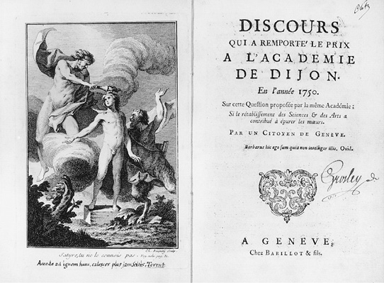
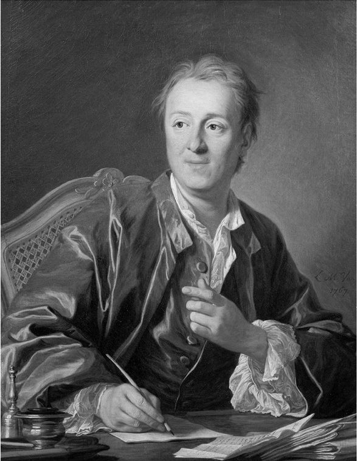
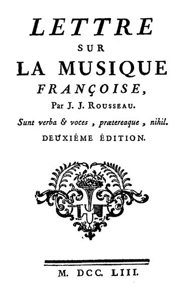
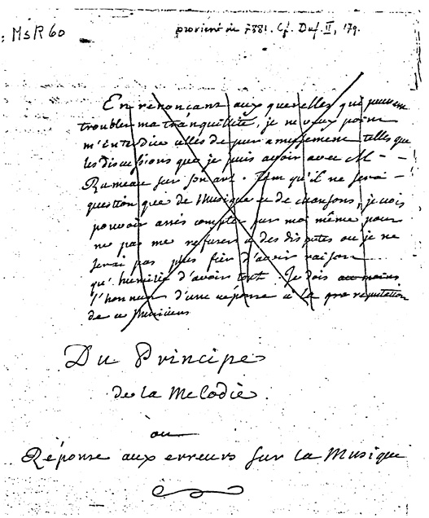

卢梭在其《忏悔录》中提到，1749年10月他在《法兰西信使》中读到一则关于第戎学院宣布举办以“艺术和科学的复兴是否有助于敦风化俗？”为题的征文比赛的通告，将选出写得最好的文章，当时，他惊愕得犹如遭受雷击。他写道：“当我读到这则通告的时候，我看到了另一个宇宙，我变成了另一个人。”（《作品全集》第一卷，第351页；《忏悔录》，第327页）他当时停在一棵树边调整呼吸，精神进入几近错乱的状态，在狂热中看到了人性自然的善与社会秩序的恶之间的冲突。这一切激发了卢梭，并成为其日后主要作品的核心思想，尽管之后他回想起来，只有隐约的印象。卢梭在《论科学与艺术》中对这一观点进行了最直接的表述，但他最终将其视为自己主要著作中最糟糕的作品之一。他失望地认为，这部开启他文学生涯的作品，既没有秩序、逻辑，也没有结构，虽然它充满了温暖和活力，但在他自己看来，在他所有著作中，这一部是最为无力、最有失优雅的（《作品全集》第一卷，第352页；《忏悔录》，第328—329页）。他的批评者很快也指出，卢梭的这一部作品最缺乏独创性。
《论科学与艺术》的核心主题是，文明是人类之祸根，艺术和科学的日趋完善伴随着人类的道德堕落。在我们获得有教养的人所具备的技能和特点之前，以及在我们的生活模式被错误的价值观和反常的需求所塑造之前，我们是“淳朴又自然的”。然而，随着知识的诞生和传播，我们最初的纯洁由于诡辩的趣味与风俗、“道貌岸然的礼貌面纱”和那些时尚的“恶性装点”而逐渐消亡，仿佛被退潮的潮水带走一样（《作品全集》第三卷，第8、10、21页；《〈论文〉及其他早期政治著作》，第7—9、20页）。卢梭认为，以前我们的祖先住在茅屋里，除了神的认可外不追求其他东西，我们不得不感到遗憾的是，我们已经丢失了那个时代的朴素。最初，世界上唯一的装饰是自然本身的雕琢，后来，那些一直与自然最为接近、最不受文化和学习束缚的文明，被证实为最充满活力和生命力的。他观察到，我们的艺术和科学并不能激发个人的勇气和爱国主义精神，反而扼杀了人们对国家的忠诚以及保护国家免受入侵的力量。中国人的奇妙发明未能阻挡他们屈服于粗俗无知的鞑靼人，圣人的博学显然是毫无用处的；那些拥有美德却未能掌握科学的波斯人可以轻而易举地征服亚洲；德国和斯基泰民族的伟大牢固地建立在其居民的朴素、天真和爱国精神之上（《作品全集》第三卷，第11、22页；《〈论文〉及其他早期政治著作》，第10—11、20页）。
最重要的是，与雅典相比，斯巴达的历史表明，那些没有虚荣文化遗迹的人类族群表现得更持久、更能抵抗暴政的罪恶。苏格拉底是雅典最聪明的人，他告诫他的同胞们，他们的傲慢会带来危险的后果。后来，在罗马，卡托以苏格拉底为榜样，猛烈抨击那些带有邪恶诱惑力的艺术和炫耀性的虚饰，瓦解了其同胞们的活力。然而，他们两个人的警告都没有得到重视，在雅典和罗马，开始流行一种完全华而不实的学习方式，并对军事纪律、农业生产和政治警觉性造成不良影响。尤其是那个曾经被视为美德圣殿的罗马共和国，很快就变成了堕落的犯罪舞台，慢慢地屈服于它早先用于控制蛮族俘虏的枷锁。卢梭补充道，埃及、希腊和君士坦丁堡的古代帝国的崩溃也呈现出相同的衰败模式，伟大的文明在科学和艺术进步的重压下衰败，这是一个普适性规则（《作品全集》第三卷，第10—14页；《〈论文〉及其他早期政治著作》，第9—13页）。
然而“一论”没有对此给出解释，几乎没有勾勒出艺术和科学应该如何对人类道德的堕落全面负责。卢梭认为，一方面，科学的形成源于人的懒惰，每一门学科都源于懒惰带来的不同恶习，例如天文学源于迷信，几何学源于贪婪，物理学源于过度的好奇；另一方面，艺术各个方面都受到奢侈的滋养，而奢侈本身是由人类的懒惰和虚荣心所催生的。卢梭认为，奢侈是一个重要的特征，因为如果没有艺术和科学，奢侈就很难蓬勃发展，而如果没有奢侈，艺术和科学则永远不可能存在。根据他的观点，道德的瓦解一定是奢侈的必然结果，而奢侈又源于懒惰。懒惰、人类腐败和奴役是人类所有文明历史的典型特征，而这一切是对人类竭尽全力想要超越快乐的无知状态的恰如其分的惩罚，殊不知，如若能永远维持快乐的无知状态，这才是福报（《作品全集》第三卷，第15、17—19、21页；《〈论文〉及其他早期政治著作》，第14、16—17、20页）。

图7 《论科学与艺术》的卷首和扉页（1750年）
在所有这些方面，《论科学与艺术》包含了关于历史哲学的第一份重要声明：明显的文化和社会进步只会导致人类真正的道德退化，而这一观点也成为卢梭作品中最核心的主题。但是在《论科学与艺术》中，关于历史哲学的阐述仍然显得初级且晦涩，它包含了至少三个关于人类腐败过程和状态的不同主题：第一，文中提出人类从最早期原始的纯真状态逐渐衰败；第二，那些在艺术和科学上并不发达的国家，在道德上要优于那些发达的国家；第三，卢梭认为在文化进步的重压之下，伟大的文明已然变得衰败。对读者而言，似乎不容易看清这些论点之间的一致性，尤其因为卢梭一方面对原始人类的生活方式表示称赞，另一方面又对超越了野蛮社会的强大文明表示首肯。另外，卢梭后来又提出了一个在人类历史启蒙运动时期非常流行的观点，这一观点认为，中世纪的野蛮和迷信延续了几个世纪，从而阻断了人类历史的发展，让人类进入了比无知更糟糕的状态。在文末，卢梭甚至提出了一个全新的命题：造成人类不幸的根源并不是艺术和科学本身，而是庸人的滥用。他在观察后得出结论，伟大的科学家和艺术家应该被委以重任，建造向人类精神荣耀致敬的纪念碑。他提出，我们这些普通百姓，应该接受命中注定的默默无闻和平庸，无须追求更多。很难理解为什么卢梭认为这种观点与针对艺术和科学的批判以及对无知、单纯和人性美德的捍卫是一致的（《作品全集》第三卷，第6、22、29—30页；《〈论文〉及其他早期政治著作》，第6、20、27—28页）。
卢梭也不清楚他所认定的文化进步对人类衰败所造成的确切影响。他的论点似乎显得相当简单，他认为艺术和科学的进步是人类道德堕落的罪魁祸首，但他也认为艺术和科学是由人们渴望，甚至有些人很享受的闲散、虚荣和奢侈所滋养的。那么，文化的进步是人类衰败的原因还是后果？卢梭在作品中主要描述的是人类追求文化和知识的过程中不可避免地带来的罪恶，但他同样宣称，人类的艺术和科学源于人类的罪恶（《作品全集》第三卷，第17、19页；《〈论文〉及其他早期政治著作》，第16、18页）。如此看来，他似乎拿不定主意。
卢梭犹豫不决的原因之一可能是他论据中的很多内容都借鉴于早期的思想家，如孟德斯鸠、费奈隆、蒙田、塞内加、柏拉图，尤其是普鲁塔克。他阅读了普鲁塔克的大量作品，并在自己的文章中多处支持或总结了普鲁塔克的观点，包括：自然的力量高于人为的技巧，不平等给人带来的压迫感，以及文明带来人类的衰败。在《关于克劳迪亚斯和尼禄统治的随笔》中，狄德罗后来评论说，“面对艺术和科学的进步，在卢梭之前，人类已经有上百次为无知而道歉”，他的观点当然是正确的。但是《论科学与艺术》缺乏原创性并不仅仅因为它跟卢梭借鉴的其他作品具有相似的整体影响力，也不仅仅因为他的学术知识都是通过学习其他人的研究成果而获得。例如，卢梭对赛西亚人的描述主要源于贺拉斯，对德国人的描述来自塔西佗，对巴黎人的勾勒来自蒙田，对斯巴达和雅典的对比源自几个作家，尤其是波舒哀和历史学家夏尔·罗兰。文中模仿的特征首先表现在卢梭用于表达其重要思想的词语，经常是从权威人士那里借鉴的。

图8 狄德罗的肖像，凡卢绘
除了大量明确标明来源的文献之外，《论科学与艺术》中至少有一段引用了孟德斯鸠的《论法的精神》和波舒哀的《世界史通论》中的内容，却没有致谢。书中还有一些引用普鲁塔克的《希腊罗马名人传》中的片段，以及至少十五处来自《蒙田随笔》的摘要，其中只有几处标明了出处，卢梭作品的最后一行也是改编自普鲁塔克和蒙田的作品。1766年多姆·约瑟夫·卡若发表的《卢梭的剽窃》或许说得过于严重了，而且其中控诉的大多数罪名都不成立，但《论科学与艺术》的确是卢梭所有著作中唯一引发此类怀疑的。尽管其论点相当尖锐，但没有特别针对其他作品，卢梭在使用其他文献的时候，主要是概括其中的观点，而不是为了强调自己的观点。他的“一论”和“二论”在这一点上的区别非常明显，因为在《论不平等》中，他是为了驳斥书中提到的大多数人物，而在《论科学与艺术》中，他只是使用他个人更有力的表述方式，反思了前人已经提出的不同观点。卢梭的第一部重要著作阐述了他将终生拥护的历史哲学，至少他的同代人开始意识到这是他最核心的学说。这部著作印刻着他作为“日内瓦公民”的标志，他宣告了自豪的出身和作者身份。但就其文学生涯而言，这部作品是他最没有特点、最不符合他个性的成就。
尽管如此，卢梭在作家之路上的发展，很大程度上要归功于《论科学与艺术》发表后立刻引发的争论，而且争论一直持续了至少三年。在那场争论的过程中，他试图证明自己的作品是正确的，那些批评者是错误的。他收集、阐述并完善了他最初的主张，从而让这些观点常常有别于最开始的构想。他并未回应所有的诋毁者，但他试图反驳至少六个他留意到的作品。几个针对他的批评者指责他未能指明人类道德沦丧的确切点，因此，他让人觉得他推崇欧洲几个世纪的野蛮状态，而不赞成随后发生的科学复兴。一些人谴责他总体上缺乏学识，这体现在他对古赛西亚人残酷本质的误解，以及他忽视了之前他称赞的一些人物，比如塞内加。他相信文学增进而非削弱人的美德。针对这些指控，卢梭在《给雷纳尔神父的信》中特别反驳道：他是为了提出一个关于艺术及科学进步和道德衰败之间关系的一般性论点，而不是追踪任何特定的事件，因此，这些批评者误解了他作品的目的（《作品全集》第三卷，第31—32页；《〈论文〉及其他早期政治著作》，第29—30页）。
卢梭在《论不平等》中进一步阐述了这一普适性的主题，在文中，他将注意力从古代世界无瑕的文明转移到原始人类的本质以及非常久远的远古时期，甚至没有 历史研究可以揭示那段时期的真正特点。在《论科学与艺术》发表以后，卢梭逐渐变得更加关注人类堕落的最终根源，而更少关注不同文化中人类堕落所呈现出的独特表现。然而，矛盾的是，当他逐渐将目光投向我们最遥远的过去时，他的论据却来自日益现代化的世界，早已占据这个世界的实际上是逃脱了人类历史苦难的野蛮人，而并非古代的英雄和圣贤。到1750年代中期，他对普鲁塔克受人尊敬的作品《希腊罗马名人传》的推崇有所衰减，取而代之的是他对《大航海历史》的全新热情，后者是由《曼侬·莱斯科》的作者阿贝·普雷沃所编辑的。卢梭观察到，人的本性和文化之间的分歧越来越敏锐和鲜明，他用来描述这些分歧的论据也越来越敏锐和鲜明。在他早期社会理论的发展过程中，他对整个人类思辨困境的洞察之广很快就弥补了他历史学识的不足。
《论科学与艺术》的一些批评者还指责卢梭生动描绘了一个古老黄金时代的怀旧幻想，这个幻想的时代只存在于神话和诗歌中，从未在现实中存在过。对于这一异议，卢梭特别回应了博尔德1751年发表的《论艺术与科学的优势》：古老黄金时代并不是历史幻象，而是一个哲学抽象概念，美德的概念本身比古老黄金时代更为虚幻，对于了解自我和获得幸福同样重要（《作品全集》第三卷，第80页；《〈论文〉及其他早期政治著作》，第71页）。他没有把过去和现在的历史时代放在一起，从而鼓励人们拯救那些人类的美德或已然丢失的远古时代的纯真。在他两部源于《论科学与艺术》的作品——写给波兰斯坦尼斯瓦夫国王的“观感随想”和他的剧本《纳西塞斯》的前言中，他指出，一个人一旦腐败，就再也无法回到品德高尚的状态，这是他这一生中一直持有的观点。而且，数学家和历史学家约瑟夫·戈蒂埃率先指出卢梭已经成为一个捍卫无知的卫道士，一个相信文化应该被摧毁、图书馆应该被烧毁的卫道士。卢梭对此尤为生气。我们当然不能让欧洲重新陷入野蛮状态，卢梭回应道，他也没有主张摧毁我们的图书馆、学院或大学，当然更不会破坏社会本身（《作品全集》第二卷，第971—972页；《作品全集》第三卷，第55—56、95页；《〈论文〉及其他早期政治著作》，第50—51、84—85、103页）。让文明人回归自然状态，恢复到纯真、不知罪恶为何物的状态，是不可能的。在批评家对《论科学与艺术》提出异议后，卢梭一直强调，道德正直的公民必须努力脚踏实地地活在这个世界上，而不是活在幻想的远古乐园中。他在人生最后一段时期，信奉另一种独处以及与自然交流的方式，但他并不推荐现代国家中幻想破灭的人们采用同样的方式。他仍然坚持认为他的思想并非乌托邦式的空想或者带有暴力的暗示。
批评者提出反对意见的力量给卢梭留下了深刻印象，他偶尔也会因此修改或放弃他理论中的某些独特观点。因此，斯坦尼斯瓦夫国王挑战卢梭描述的美德和无知之间的关系，理由是卢梭所赞赏的那些没经过教育的人，有时候是残酷的，而并非无害的。卢梭接受了这一观点，并提出区分两种无知，一种是可憎、可怕的，一种是温和、纯洁的（《作品全集》第三卷，第53—54页；《〈论文〉及其他早期政治著作》，第48—49页）。但是，由于卢梭没有进一步阐述，这一回应让人很难信服。在他后来的著作中，他不再像之前那么决然地把原始人类的道德纯真仅仅归结于他们缺乏知识。1740年代早期，卢梭结交了哲学家查尔斯·博尔德。查尔斯声称《论科学与艺术》的作者对未开化民族的军事力量表示赞扬，这一观点相当不明智，他们野蛮的征服行径证明了他们的不公正，而并非无辜。卢梭很快就同意了这一观点，认为互相摧毁并非我们注定的命运（《作品全集》第三卷，第82页；《〈论文〉及其他早期政治著作》，第72页）。虽然卢梭一开始就表示，为了征服而战与为了捍卫自由而战并不相同，但他再也没有像他在“一论”中那样使用光辉的色彩来描绘军事上英勇作战的典范。受马基雅维里的启发，卢梭并没有放弃他的信仰，仍然认为罗马共和国的自由是由其民兵所维持的，但是在之后的《论不平等》中，他把所有的战争都描绘成罪恶的、凶残的、可恨的、对于战斗者而言是毫无意义的。
虽然卢梭对其评论家做出了一些让步，但他将其他的指控转化并用于更有助于自己理论发展的地方。这尤其体现在他回复斯坦尼斯瓦夫和博尔德的主张：人的道德退化是由于财富过剩，而并非因为知识；同时也体现在他对博尔德关于国家衰落最终只有可能是由于政治原因的观点的回应上。卢梭在“观感随想”中承认，不同的习俗、气候、法律、经济和政府（由于达朗贝尔反对1751年卢梭在《百科全书》“绪论”中提出的观点，而引发了大众的注意），所有这些必然都在人类道德特征的形成中发挥着作用（《作品全集》第三卷，第42—43页；《〈论文〉及其他早期政治著作》，第39页）。此后，他更直接地指出了这些因素的影响。例如，他在1752年对博尔德的“最后的回应”中指出，之前他谴责奢侈是我们堕落的主要原因，而奢侈本身主要是由于现代世界农业的衰落（《作品全集》第三卷，第79页；《〈论文〉及其他早期政治著作》，第70页）。在同一文本中，卢梭随后又首次在自己的作品《纳西塞斯》的前言中引发了人们对私有财产的罪恶影响的关注。在“最后的回应”中，他主要探讨了所有权的概念，以及这一概念在现实中所引发的地球上主人和奴隶之间的残酷区分，他在很大程度上是为了挑战博尔德的论点——人类在最原始的状态下便已是凶猛、好斗的。“在你的 和我的 这样可怕的语言出现之前”，他声称，“在有人饿死时，还有人仍然渴望得到奢侈品”，在这样丑恶的人出现之前，他想知道我们的祖先究竟有哪些罪恶（《作品全集》第三卷，第80页；《〈论文〉及其他早期政治著作》，第71页）。在《纳西塞斯》的前言中，卢梭转而集中论述了野蛮人的道德特质明显优于欧洲人这一事实，因为野蛮人并不会受到贪婪、嫉妒、欺骗这些恶习的影响，而这些恶习在文明世界里必然会让人们互相蔑视并彼此为敌。卢梭表明：“财产 这个词在野蛮人那里几乎没有任何意义”。他们在这方面没有利益冲突；没有什么能驱使他们像贪婪的文明人那样总是互相欺骗（《作品全集》第二卷，第969—970页；《〈论文〉及其他早期政治著作》，第101页）。这两段文章是回应那些针对《论科学与艺术》的评论者的，因此，我们可以在其中找到卢梭最早关于主要论点的陈述，后来他在《论不平等》中，以挑战洛克的财产理论的形式，对其主要论点进行了详细阐述。
卢梭那时也开始更为密切地关注政治因素的作用。当代社会的罪恶在之前已经被很多人描述过，他在《纳西塞斯》的前言中也对此进行了表述。其他人发现了问题，而卢梭却实际上发现了其原因。他在1753年发现了一个重要事实，即我们所有的恶习最终并非源于我们的本性，而是由于政府糟糕的统治方式（《作品全集》第二卷，第969页；《〈论文〉及其他早期政治著作》，第101页）。两年后，他在《政治经济学》中再次提出了同样的观点，他在其中指出，“从长远来看，人民是由政府塑造的”（《作品全集》第三卷，第251页；《〈社会契约论〉及其他晚期政治著作》，第13页）。在接下来的十年里，他在《致博蒙书》中宣称，文明人的假冒行为是由我们的“社会秩序”造成的，它对我们的本性施加暴虐（《作品全集》第四卷，第966页）。1770年左右，他在《忏悔录》中表明，这一原则的真理早在三十年前就已经很清楚了，当时他还在威尼斯逗留，他目睹了这个国家政府的缺陷对其民众带来的可怕后果。因此，卢梭在《纳西塞斯》的前言中首次阐述了这一观点，之后他又在不同的文章中以不同的方式进行了详细的阐述，并成为他生活和工作中的重要内容。
关于钱财富贵造成我们的道德沦丧，卢梭很快表明自己只同意斯坦尼斯瓦夫和博尔德的部分观点。1750年代早期，在一些零散的作品中，尤其在一篇关于“奢侈、商业和艺术”的短文中，卢梭认为，人类的贪婪是渴望自己优于同胞的表现，所以黄金在人类事务中的引入，必然不可避免地伴随着分配不均，并由此产生了贫穷这一问题以及富人对穷人的羞辱（《作品全集》第三卷，第522页）。但是，即便认识到财富积累在人类道德腐败中所起的作用，他还是坚持认为，这不是导致我们道德衰退的主要原因。相反，正如他在“观感随想”中所宣称的，财富和贫穷是相对的，这反映了社会不平等的程度，而并非决定了社会不平等的程度。重新排列卢梭在《论科学与艺术》中描述的恶习宗谱，他现在提出，在我们腐败的可怕秩序中，最需要关注的是不平等，其次是财富，而财富让奢侈和懒惰的增长成为可能。奢侈和懒惰一方面促进了艺术的发展，另一方面，又促进了科学的发展（《作品全集》第三卷，第49—50页；《〈论文〉及其他早期政治著作》，第45页）。这是卢梭的全新论点，把艺术和科学放在最后，而不是像他的评论家所认为的那样放在首位。
卢梭观点的改变，至少有部分原因可能在“观感随想”和《纳西塞斯》的前言中找到。他提出，虽然文化进步导致我们产生了一大堆恶习，但在文明社会中，从根本上让我们道德沦陷的是我们渴望 通过知识而变得出类拔萃，而并非想获得有学问的人的成就。他声称，我们对文化的追求高于一切，表现了我们要跟同胞区别开的决心。卢梭在两个地方简要提及《论科学与艺术》中描述的“追求显赫的风靡”，回顾了费奈隆对18世纪初期在法国发酵了三十多年的古今之争所做的主要贡献。促使我们制造先进社会的手工制品和设备的，并非我们对卓越的追求，而是因为我们希望得到他人的尊重。因此，文明似乎只是实现了我们试图建立的不平等的社会尊重（《作品全集》第二卷，第965页；《作品全集》第三卷，第19、48页；《〈论文〉及其他早期政治著作》，第18、43—44、97页）。卢梭认为，除非每个人的天资大致相同，否则道德美德不可能真正存在。他在“观感随想”中表示，我们唯一可以与腐败抗衡的保障，是最初的平等，而这一平等现在已经不可挽回地丢失了，这曾经让我们保持纯真，也曾经是美德的真正源泉（《作品全集》第三卷，第56页；《〈论文〉及其他早期政治著作》，第50—51页）。因此，他总结说，我们对艺术和科学卓越的追求与人们希望在政治中占主导地位的渴望一样，因此他很快便在《论不平等》中专注于对这一观点的阐述。
因此，卢梭在所有这些方面对关于《论科学与艺术》的批评的回应，让他获得了更多政治、社会及经济相关的论点，他在“二论”及后续作品中对这些论点继续进行了阐述。然而，他从未放弃早期关于艺术和科学是造成人类腐败的重要原因这一观点。相反，在围绕《论科学与艺术》的争论中，他即便在延展自己的论点以兼顾其他因素的同时，仍不断重申自己在获奖论文中提出的主张，即虚荣、懒惰、奢侈和文化之间的相互关系。卢梭的批评者克劳德·尼古拉斯·勒卡特是一位解剖学和外科教授，也是鲁昂学院的常务秘书，他要求卢梭更精准地指出哪些文化领域更应该受到指责，从而为卢梭提供了一个拓展其思路的全新方向。勒卡特高呼，卢梭肯定不会建议将音乐纳入那些导致我们堕落的艺术和科学学科之列，他相信作为《百科全书》音乐主题的主要贡献者，卢梭一定比其他任何人都更清楚这门艺术多么有用且有益，至少应该成为他总体论点中的例外。
勒卡特的假设与事实相去不远。1753年，“喜歌剧之争”最为激烈的时候，关于佩尔戈莱西的《女仆作夫人》和意大利喜歌剧 的争论，将巴黎歌剧院和法国宫廷剧的观众分成不同音乐派系。卢梭发表了《论法国音乐的通信》，这引发了比三年前的《论科学与艺术》更大的抗议风暴。卢梭提出，有些语言比其他语言更适合音乐，因为它们的元音更悦耳，声调更柔和，修辞更有韵律。他声称，这些语言，尤其是意大利语，能够表现出清晰的旋律，适合用于歌曲的表达；其他的语言，比如法语，其特点是缺乏响亮的元音，辅音太粗糙，无法唱出悦耳的音调，因而那些使用这些语言的作曲家不得不用和声伴奏的刺耳声音来修饰他们的音乐。由于在未经修饰的歌曲里没法清晰地唱出法语的发音，所以卢梭在文末总结道，如果法国人想要寻求一种他们自己的音乐形式，那对他们而言更糟糕。在发表这一煽动性的作品和这些中伤性的言论后，卢梭因其对公众品位的侮辱而广受谴责。如果说他的《论法国音乐的通信》并未激起法国民众叛乱，那这也是他生平第一次成为法国政府的敌人。正如后来伏尔泰认识到的那样，卢梭在政治上根本没有他评论音乐那么具有煽动性。
如果勒卡特能读到卢梭最初起草的关于该主题的这部分内容，他就会理解为什么音乐并没有与卢梭在《论科学与艺术》中表达的总体论点相悖。这部分内容最初是作为《论不平等》的一部分而起草的，但最终在1781年勒卡特辞世后，才作为《论语言的起源》中的两章面世。相反，根据卢梭的说法，在音乐发展史中，人类道德的堕落体现得最为明显。他在《论语言的起源》中提出，我们最初使用的语言可能出现在世界的南部地区，那里气候温和，土地肥沃。这些语言一定具有节奏性和旋律性，应该像诗歌而不像散文，是用来唱的而非用来说的；总之，我们的祖先在第一次表达自己冲动的激情时，一定充满魅力（《作品全集》第五卷，第407、410—411、416页；《〈论文〉及其他早期政治著作》，第278、282、287页）。但是后来在北方恶劣条件下出现的语言，首先是用以表达人的需求，而不是激情，因而没那么响亮，却更尖锐（《作品全集》第五卷，第380、407—409页；《〈论文〉及其他早期政治著作》，第253、279—281页）。随着一波蛮族入侵并最终征服地中海世界，北方人的喉音和断音被优先采用，并取代了之前用以表达情感的流畅语调，原始语言所具备的甜蜜、得体和优雅都被丢弃了（《作品全集》第五卷，第425—427页；《〈论文〉及其他早期政治著作》，第296—298页）。卢梭声称，这种富有旋律的用语会被压制，而我们的语言也逐渐被剥夺了最初的魅力。在蛮族统治和农业劳动的束缚下，单调的散文实际上比诗歌更重要。随着散文的出现，语言，尤其是法语、英语和德语的早期形式，都将变得平淡无奇（《作品全集》第五卷，第392、409页；《〈论文〉及其他早期政治著作》，第280—281页）。
另一方面，当音乐中使用散文语言时，音乐会因为缺失语义成分而失去原有的感觉，只有哥特式创新的和弦才能让音乐进一步发展，即将和弦的模式运用到人的表达方式中，从而产生了人为创造的愉悦，取代了方言歌曲本身具有的天然趣味。在这些压力下，音乐变得比声乐更有用，而音程的计算被灵巧的旋律变化所取代（《作品全集》第五卷，第424页；《〈论文〉及其他早期政治著作》，第295页）。散文只能在写作中而无法在讲话中得到优化，沟通不再具有表达力，而只有为了确认对方的感受时，才有必要查阅正确的语法规则和准确的字典词汇（《作品全集》第五卷，第386、415页；《〈论文〉及其他早期政治著作》，第258、286页）。

图9 《论法国音乐的通信》第二版扉页（巴黎，1753年）
似乎是为了回应勒卡特对其历史哲学的质疑，卢梭把他的论文的最后一章命名为“语言与政府的关系”，并宣称与音乐分离的语言对自由有害。他断言，平淡的语言会激发奴性，而缺乏音调和节奏会使语言变得空洞，从而也造就了空洞的人。现代欧洲的语言已经变得仅适用于近距离的谈话，就像那些无用的唠叨，人们有气无力地相互低语，声音缺乏音调，因而也没有精神和激情。由于我们的语言已经丢失了其音乐的特质，丧失了原有的活力和清晰度，几乎就像是没有品格或意志力的人在轻声嘀咕。如果说这是使用当代语言私下对话时的情形，那么在公开演讲时，则更让人无法忍受。对于那些统治他人却无话可说的人而言，当人们聚集在一起，毫无收敛地以难以理解的语言大声疾呼对他们说教时，他们几乎无能为力。统治者的宣言和牧师的祷告不断地滥用我们的情感，使我们麻木。世俗及宗教骗子所传递的扭曲的说教和布道，已经成为现代世界中最受欢迎的演讲形式（《作品全集》第五卷，第428—429页；《〈论文〉及其他早期政治著作》，第299页）。
卢梭总结道，语言的私人性和公共性准确地描述了我们的社会退化至完全堕落的状态。对话变得隐秘，政治话语变得贫瘠，我们成为那些在讲道坛上通过谩骂和布道来统治的人的无言的听众，并借此成功地使我们原来大声说话的方式跟上时代。实际上，由于不再需要这些扭曲的言论来将我们留在指定的位置，现代国家的统治者们已经正确地认识到他们不召集任何大会或集会也可以维护自己的权威。他们只需要将民众的注意力引向他们可以相互交换的许多事物上，而不去关注他们仍想交流的想法上。曾经用来表达快乐的抑扬顿挫的声音，其最新的表现形式现已被重新定义为代表交易的术语。而“aimez-moi”（爱我 ）肯定是被“aidez-moi”（帮我 ）所取代，现在我们对彼此说的都是“donnez de l'argent”（给钱 ）（《作品全集》第五卷，第408、428页；《〈论文〉及其他早期政治著作》，第279、298—299页）。在《社会契约论》第三册第十五章，卢梭仍然坚持同样的观点，只是没有涉及音乐的角度，而保留了政治的角度。
当然，除了勒卡特对《论科学与艺术》的反对之外，《论语言的起源》的写作必然受到了其他更多的启发。卢梭自己承认，《论语言的起源》原来是作为《论不平等》的一部分，但由于篇幅太长且内容也不大合适，便将其删除了。1755年，他将其附加在对《旋律的原则》的研究之后，他起草《旋律的原则》，在一定程度上是为了回应拉莫对《百科全书》中关于音乐文章的批判，但后来卢梭又将其撤回了。论文中强调音乐的旋律比和谐重要，这表明卢梭反对拉莫所提出的核心观点。拉莫终其一生坚持将旋律和谐视为无上重要，他用共振体的基本低音这一创新概念来解释旋律和谐 。但是卢梭在《论语言的起源》中对音乐和语言的评述也成为其历史哲学理论的不可分割的组成部分，与其他关于艺术和科学的探讨相比，这部作品包含了针对卢梭所提出的文明进步导致道德腐败这一论点更为丰富的描述。从这个意义上而言，它最直接地回击了勒卡特对卢梭最初论点的质疑。在对博尔德的“最后的回应”中，卢梭声称他已经预见并提前应对了所有针对其论点的诋毁者看似合理的指控（《作品全集》第三卷，第71—72页；《〈论文〉及其他早期政治著作》，第64页），但是他并没有很好地体现出他的应对策略的独创性，也没有很好地体现出他反驳的微妙之处，他的原话中所包含的新主题几乎令人难以察觉。

图10 《旋律的原则》手稿的扉页
然而，至少有一个针对“一论”的反对意见，卢梭并没有在其早期作品中进行回应。一位匿名的评论家，可能是阿贝·雷纳尔，他后来与狄德罗及其他人合作编纂《东西印度群岛的历史》。雷纳尔控诉卢梭在其发表的论文中，没能提供任何实际的结论，而且忽略了为他所描述的问题提出补救措施。在对博尔德的《最后的回应》中，卢梭承认这一批评的分量，并且说他只看到了问题背后的罪恶，并已经努力寻找其背后的根源。他声称，在他人生的这个阶段，不得不把寻找补救措施这一任务留给别人（《作品全集》第三卷，第95页；《〈论文〉及其他早期政治著作》，第85页）。他并没有在《论不平等》以及1750年代早中期的其他著作中回应这一质疑，但他也没有完全放弃回应。在那段时间及之后不久，在他创作的一些并非为了出版的作品中，他允许自己的想象力飞翔于政治幻想中，这些幻想呼吁彻底地变革。例如在《日内瓦手稿》第一卷中的第二章，《社会契约论》早期的初稿中，他回应了狄德罗对《百科全书》的一些评论，他呼吁建立“新的组织，以修正……社会总体的缺点”（《作品全集》第三卷，第288页；《〈社会契约论〉及其他晚期政治著作》，第159页）。后来卢梭在《致达朗贝尔论戏剧的信》和他最终版的《社会契约论》中，尝试为人类丢失的公民联合的理想注入新的生气，并以此提出了一套能让我们的道德情操得到提升而非堕落的原则。但卢梭却发现他的家乡日内瓦以及收留了他的法国对此都非常警觉，并认为他的存在对公共秩序构成了威胁。